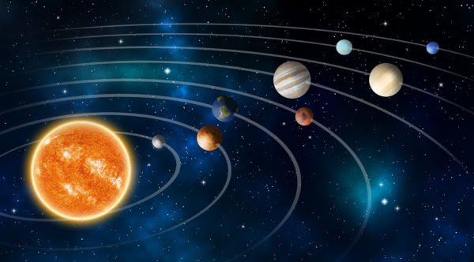

CURIOSIDADES
No máximo duas horas antes de o Sol nascer ou duas horas antes de o Sol se pôr, é possível avistar Mercúrio a olho nu.
Um dia em Vênus é maior que um ano na Terra.
Em Marte, há diversos vulcões inativos. O maior deles é conhecido como Olympus Mons.
Em 1971, foi colocada na órbita de Marte a sonda Mariner, que fez fotos da superfície do planeta, mostrando detalhes de até um quilômetro.
Júpiter possui mais de 60 satélites naturais de pequenas dimensões.
Saturno possui cerca de 60 luas.
A presença de metano na atmosfera de Netuno lhe confere a cor azulada.
Embora Mercúrio esteja mais perto do Sol, ele não é o mais quente. Vênus é quem ocupa esse posto, uma vez que possui uma atmosfera composta por CO2, que cria uma espécie de efeito estufa no planeta, elevando sua temperatura a mais de 460ºC.
